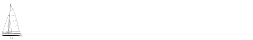

|
Rotte del lago
Minicrociere
Niente "motore" per addentrarsi nell'eco
sistema del lago di Garda e delle sue coste. Forza
del vento, perizia del marinaio e forza delle braccia
per la voga, gambe per l'esplorazione
nelle vallate che si affacciano sul lago. Con le rotte
del lago si possono vivere momenti di
vero contatto con la natura, apprendere l'arte
marinaresca e godere di momenti unici.
Con i Caravelle (le barche leggere e manovrabili della
scuola della Compagnia Derive
Fitzcarraldo asd) ci si potrá addentrare
facilmente nelle foci dei torrenti, attraversare il lago
in
sicurezza e apprendere alcune nozioni fondamentali.
Per ogni barca c'é un istruttore e max 4 allievi.

ROTTA DEGLI ULIVI
BRENZONE - ISOLA TRIMELONE -
CASTELLETTO
La costa di Brenzone, trekking
tra gli ulivi
Programma
Partenza alle ore 9,30 dalla sede della
scuola
Trekking tra gli uliveti di Brenzone
Visita ai borghi storici e degustazione di prodotti
locali
Rientro alla sede della scuola ore 12 circa
Rientro alla sede della scuola
Preparazione delle barche e navigazione a vela lungo
costa
Rientro alla base alle ore 16 circa
ROTTA DEI LIMONI
BRENZONE - PRA' DELLA FAM - BRENZONE
Il
microclima mediterraneo pi� a nord d'Europa, gli agrumi
della limonaia, torrenti, cascate e costa a picco sul
lago. La navigazione su questa rotta richiede impegno e
spirito sportivo
Programma
Partenza alle ore 12.00 da Brenzone
Traversata a vela fino alla zona denominata "Pra de la
fam"
Sbarco sulla spiaggia o in porto
Visita alla limonaia storica
Breve trekking fino al ponte degli amanti
Visita alla cascata vicino al ponte
Colazione al sacco in spiaggia
Navigazione a vela fino all'isola di Trimelone
Ritorno alla base.
ROTTA del COTONE
BRENZONE - CAMPIONE DEL GARDA -
BRENZONE
Questa � una rotta storica percorsa
fino al secolo scorso dalle maestranze, in maggioranza
donne, che da Brenzone si recavano all'opificio
Feltrinelli - poi Olcese - per la lavorazione del
cotone. La navigazione su questa rotta richiede impegno
e spirito sportivo
Programma
Partenza alle ore 9.00 da Brenzone
Traversata a vela fino a Campione
Approdo alle foci del torrente Campione
Sosta e ristoro
Trekking attraverso i sentieri scavati nella roccia che
portano alle cascate
Ritorno all'approdo e partenza dal torrente Campione
Traversata a vela verso Brenzone
Ritorno alla base
|